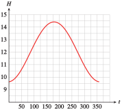
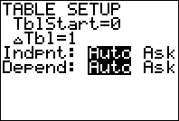
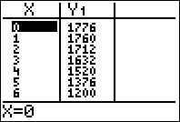
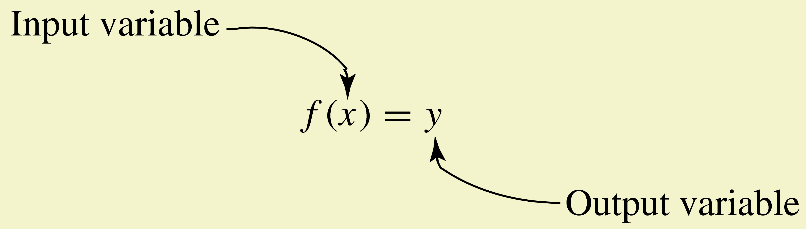
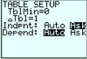
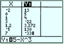
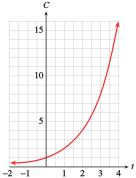

We often want to predict values of one variable from the values of a related variable. For example, when a physician prescribes a drug in a certain dosage, she needs to know how long the dose will remain in the bloodstream. A sales manager needs to know how the price of his product will affect its sales. A function is a special type of relationship between variables that allows us to make such predictions.
Suppose it costs $800 for flying lessons, plus $30 per hour to rent a plane. If we let \(C\) represent the total cost for \(t\) hours of flying lessons, then
The variable \(t\) is called the input or independent variable, and \(C\) is the output or dependent variable, because its values are determined by the value of \(t\text{.}\) We can display the relationship between two variables by a table or by ordered pairs. The input variable is the first component of the ordered pair, and the output variable is the second component.
\(t\)
\(C\)
\((t,C)\)
\(0\)
\(800\)
\((0, 800)\)
\(4\)
\(920\)
\((4, 920)\)
\(10\)
\(1100\)
\((10,1100)\)
For this relationship, we can find the value of \(C\) for any given value of \(t\text{.}\) All we have to do is substitute the value of \(t\) into the equation and solve for \(C\text{.}\) Note that there can be only one value of \(C\) for each value of \(t\text{.}\)
Definition of Function.
A function is a relationship between two variables for which a unique value of the output variable can be determined from a value of the input variable.
Note1.33.
What distinguishes functions from other variable relationships? The definition of a function calls for a unique valuethat is, exactly one value of the output variable corresponding to each value of the input variable. This property makes functions useful in applications because they can often be used to make predictions.
Example1.34.
The distance, \(d\text{,}\) traveled by a car in 2 hours is a function of its speed, \(r\text{.}\) If we know the speed of the car, we can determine the distance it travels by the formula \(d = r \cdot 2\text{.}\)
The cost of a fill-up with unleaded gasoline is a function of the number of gallons purchased. The gas pump represents the function by displaying the corresponding values of the input variable (number of gallons) and the output variable (cost).
Score on the Scholastic Aptitude Test (SAT) is not a function of score on an IQ test, because two people with the same score on an IQ test may score differently on the SAT; that is, a persons score on the SAT is not uniquely determined by his or her score on an IQ test.
Checkpoint1.35.Practice 1.
As part of a project to improve the success rate of freshmen, the counseling department studied the grades earned by a group of students in English and algebra. Do you think that a students grade in algebra is a function of his or her grade in English?
Yes
No
Explain why or why not.
A) Each value of \(x \) has exactly one value of \(y \) associated with it.
B) Two students with the same grade English can have different grades in algebra.
C) Two students with the same grade math will also have the same grade in English.
D) Two students with the same grade math can have different grades in English.
Phatburger features a soda bar, where you can serve your own soft drinks in any size. Do you think that the number of calories in a serving of Zap Kola is a function of the number of fluid ounces?
Yes
No
Explain why or why not.
A) The number of calories is proportional to the number of fluid ounces.
B) Two servings with the same calories will have different fluid ounces.
C) Two servings with the same flid ounces will have different calories.
Answer1.
\(\text{No}\)
Answer2.
\(\text{Choice 2}\)
Answer3.
\(\text{Yes}\)
Answer4.
\(\text{A) The ... fluid ounces.}\)
Solution.
No, students with the same grade in English can have different grades in algebra.
Yes, the number of calories is proportional to the number of fluid ounces.
Checkpoint1.36.QuickCheck 1.
What distinguishes a function from other variable relationships?
A) The variables are related by a formula.
B) The values of the input and output variables must be different.
C) There cannot be two output values for a single input value.
D) There cannot be two input values for a single output value.
Answer.
\(\text{C) There ... input value.}\)
Solution.
There cannot be two output values for a single input value.
A function can be described in several different ways. In the following examples, we consider functions defined by tables, by graphs, and by equations.
SubsectionFunctions Defined by Tables
When we use a table to describe a function, the first variable in the table (the left column of a vertical table or the top row of a horizontal table) is the input variable, and the second variable is the output. We say that the output variable is a function of the input.
Example1.37.
The table below shows data on sales compiled over several years by the accounting office for Eau Claire Auto Parts, a division of Major Motors. In this example, the year is the input variable, and total sales is the output. We say that total sales, \(S\text{,}\)is a function of\(t\text{.}\)
Year \((t)\)
Total sales \((S)\)
2000
$612,000
2001
$663,000
2002
$692,000
2003
$749,000
2004
$904,000
The table below gives the cost of sending printed material by first-class mail starting July 10, 2022.
Weight in ounces \((w)\)
Postage \((P)\)
\(0 \lt w \le 1 \)
$0.60
\(1 \lt w \le 2 \)
$0.84
\(2 \lt w \le 3 \)
$1.08
\(3 \lt w \le 4 \)
$1.32
\(4 \lt w \le 5 \)
$1.56
\(5 \lt w \le 6 \)
$1.80
\(6 \lt w \le 7 \)
$2.04
If we know the weight of the article being shipped, we can find the postage from the table. For instance, a catalog weighing 4.5 ounces would require $1.56 in postage. In this example, \(w\) is the input variable and \(p\) is the output variable. We say that \(p\)is a function of\(w\text{.}\)
The table below records the age and cholesterol count for 20 patients tested in a hospital survey.
Age
Cholesterol count
Age
Cholesterol count
53
217
\(\alert{51}\)
\(\alert{209}\)
48
232
53
241
55
198
49
186
56
238
\(\alert{51}\)
\(\alert{216}\)
\(\alert{51}\)
\(\alert{227}\)
57
208
52
264
52
248
53
195
50
214
47
203
56
271
48
212
53
193
50
234
48
172
According to these data, cholesterol count is not a function of age, because several patients who are the same age have different cholesterol levels. For example, three different patients are 51 years old but have cholesterol counts of 227, 209, and 216, respectively. Thus, we cannot determine a unique value of the output variable (cholesterol count) from the value of the input variable (age). Other factors besides age must influence a persons cholesterol count.
Note1.38.
Note that several different inputs for a function can have the same output. For example, the inputs 4.5 and 4.25 in part (b) of the Example above have output $1.56. However, a single input cannot have more than one output, as illustrated in part (c) of the Example.
Checkpoint1.39.Practice 2.
Decide whether each table describes \(y\) as a function of \(x\text{.}\) Explain your choice.
\(x\)
\(3.5\)
\(2.0\)
\(2.5\)
\(3.5\)
\(2.5\)
\(4.0\)
\(2.5\)
\(3.0\)
\(y\)
\(2.5\)
\(3.0\)
\(2.5\)
\(4.0\)
\(3.5\)
\(4.0\)
\(2.0\)
\(2.5\)
Is \(y\) a function of \(x\text{?}\)
Yes
No
Each value of \(x\) has exactly one value of \(y\) associated with it.
For example, \(x=3.5\) corresponds both to \(y=2.5\) and also to \(y=4.0\)
\(x\)
\(-3\)
\(-2\)
\(-1\)
\(0\)
\(1\)
\(2\)
\(3\)
\(y\)
\(17\)
\(3\)
\(0\)
\(-1\)
\(0\)
\(3\)
\(17\)
Is \(y\) a function of \(x\text{?}\)
Yes
No
Each value of \(x\) has exactly one value of \(y\) associated with it.
For example, \(y=3\) corresponds both to \(x=-2\) and also to \(x=2\)
Answer1.
\(\text{No}\)
Answer2.
\(\text{Choice 2}\)
Answer3.
\(\text{Yes}\)
Answer4.
\(\text{Choice 1}\)
Solution.
No, for example, \(x=3.5\) corresponds both to \(y=2.5\) and also to \(y=4\text{.}\)
Yes, each value of \(x\) has exactly one value of \(y\) associated with it.
Checkpoint1.40.QuickCheck 2.
How would you know if a table of values does not come from a function?
A) The output values are all the same.
B) The input values are not evely spaced.
C) Two different input values have the same output value.
D) Two different output values have the same input value.
Answer.
\(\text{D) Two ... input value.}\)
Solution.
Two different output values have the same input value.
SubsectionFunctions Defined by Graphs
We can also use a graph to define a function. The input variable is displayed on the horizontal axis, and the output variable on the vertical axis.
Example1.41.
The graph shows the number of hours, \(H\text{,}\) that the sun is above the horizon in Peoria, Illinois, on day \(t\text{,}\) where \(t = 0\) on January 1.
Which variable is the input, and which is the output?
How many hours of sunlight are there in Peoria on day 150?
On which days are there 12 hours of sunlight?
What are the maximum and minimum values of \(H\text{,}\) and when do these values occur?

Solution.
The input variable, \(t\text{,}\) appears on the horizontal axis. The number of daylight hours, \(H\text{,}\) is a function of the date. The output variable appears on the vertical axis.
The point on the curve where \(t = 150\) has \(H \approx 14.1\text{,}\) so Peoria gets about 14.1 hours of daylight when \(t = 150\text{,}\) which is at the end of May.
\(H = 12\) at the two points where \(t \approx 85\) (in late March) and \(t \approx 270\) (late September).
The maximum value of 14.4 hours occurs on the longest day of the year, when \(t \approx 170\text{,}\) about three weeks into June. The minimum of 9.6 hours occurs on the shortest day, when \(t \approx 355\text{,}\) about three weeks into December.
Checkpoint1.42.Practice 3.
The graph shows the elevation in feet, \(a\text{,}\) of the Los Angeles Marathon course at a distance \(d\) miles into the race. (Source: Los Angeles Times, March 3, 2005)
Which variable is the input, and which is the output?
The input variable is \(d \text{,}\) and the output variable is \(a \text{.}\)
The input variable is \(a \text{,}\) and the output variable is \(d \text{.}\)
What is the elevation at mile 20?
Answer: feet
At what distances is the elevation 150 feet?
The relevant distances (to the nearest half-mile) separated by commas: miles
What are the maximum and minimum values of \(a \text{,}\) and when do these values occur?
The maximum elevation is \(a=\) feet which occurs at \(d=\).
The runners pass by the Los Angeles Coliseum at about 4.2 miles into the race. What is the elevation there?
Approximately (within 5) feet
Answer1.
\(\text{Choice 1}\)
Answer2.
\(210\)
Answer3.
\(5, 11, 12, 16, 17.5, 18\)
Answer4.
\(300\)
Answer5.
\(0\)
Answer6.
\(165\)
Solution.
The input variable is \(d \text{,}\) and the output variable is \(a \text{.}\)
Approximately 210 feet
Approximately where \(d\approx 5 \text{,}\)\(d\approx 11 \text{,}\)\(d\approx 12 \text{,}\)\(d\approx 16 \text{,}\)\(d\approx 17.5 \text{,}\) and \(d\approx 18\)
The maximum value of 300 feet occurs at the start, when \(d = 0 \text{.}\) The minimum of 85 feet occurs when \(d\approx 15 \text{.}\)
Approximately 165 feet
SubsectionFunctions Defined by Equations
Example1.43 illustrates a function defined by an equation.
Example1.43.
As of 2020, One World Trade Center in New York City is the nations tallest building, at 1776 feet. If an algebra book is dropped from the top of One World Trade Center, its height above the ground after \(t\) seconds is given by the equation
\begin{equation*}
h = 1776 - 16t^2
\end{equation*}
Thus, after \(\alert{1}\) second the books height is
For this function, \(t\) is the input variable and \(h\) is the output variable. For any value of \(t\text{,}\) a unique value of \(h\) can be determined from the equation for \(h\text{.}\) We say that \(h\)is a function of\(t\text{.}\)
Checkpoint1.44.Practice 4.
Write an equation that gives the volume, \(V\text{,}\) of a sphere as a function of its radius, \(r\text{.}\)
\(V=\)
Answer.
\({\frac{4}{3}}\pi r^{3}\)
Solution.
\(V=\dfrac{4}{3}\pi r^3\)
Checkpoint1.45.QuickCheck 3.
Name three ways to describe a function.
A) By inputs, outputs, or evaluation
B) By tables, equations, or graphs
C) By the intercepts, the slope, or the vertex
D) By numbers, letters, or diagrams
Answer.
\(\text{B) By ... , or graphs}\)
Solution.
By tables, equations, or graphs
Technology1.46.Making a Table of Values with a Calculator.
We can use a graphing calculator to make a table of values for a function defined by an equation. For the function in Example1.43,
\begin{equation*}
h = 1776 - 16t^2
\end{equation*}
we follow the steps:
Enter the equation: Press the Y= key, clear out any other equations, and define \(Y_1 = 1776 - 16X^2.\)
Choose the \(x\)-values for the table. Press 2ndWINDOW to access the \(TblSet\) (Table Setup) menu and set it to look like the figure at left below.
This setting will give us an initial x-value of 0 \((TblStart = 0)\) and an increment of one unit in the \(x\)-values, \((\Delta Tbl = 1)\text{.}\) It also fills in values of both variables automatically.
Press 2ndGRAPH to see the table of values, as shown in the figure at right below. From this table, we can check the heights we found in Example1.43.


Now try making a table of values with \(TblStart = 0\) and \(\Delta Tbl = 0.5\text{.}\) Use the and arrow keys to scroll up and down the table.
Checkpoint1.47.Pause and Reflect.
Write one question you still have about functions.
SubsectionFunction Notation
There is a convenient notation for discussing functions. First, we choose a letter, such as \(f\text{,}\)\(g\text{,}\) or \(h\) (or \(F\text{,}\)\(G\text{,}\) or \(H\)), to name a particular function. (We can use any letter, but these are the most common choices.)
For instance, in Example1.43, the height, \(h\text{,}\) of a falling algebra book is a function of the elapsed time, \(t\text{.}\) We might call this function \(f\text{.}\) In other words, \(f\) is the name of the relationship between the variables \(h\) and \(t\text{.}\) We write
\begin{equation*}
h = f (t)
\end{equation*}
which means "\(h\) is a function of \(t\text{,}\) and \(f\) is the name of the function."
Caution1.48.
The new symbol \(f(t)\text{,}\) read "\(f\) of \(t\text{,}\)" is another name for the height, \(h\text{.}\) The parentheses in the symbol \(f(t)\) do not indicate multiplication. (It would not make sense to multiply the name of a function by a variable.) Think of the symbol \(f(t)\) as a single variable that represents the output value of the function.
With this new notation we may write
\begin{equation*}
h = f (t) = 1776 - 16t^2
\end{equation*}
or just
\begin{equation*}
f (t) = 1776 - 16t^2
\end{equation*}
instead of
\begin{equation*}
h = 1776 - 16t^2
\end{equation*}
to describe the function.
Note1.49.
Perhaps it seems complicated to introduce a new symbol for \(h\text{,}\) but the notation \(f(t)\) is very useful for showing the correspondence between specific values of the variables \(h\) and \(t\text{.}\)
Example1.50.
In Example1.43, the height of an algebra book dropped from the top of One World Trade Center is given by the equation
\begin{equation*}
h = 1776 - 16t^2
\end{equation*}
We see that
when \(t=1\)
\(h=1760\)
when \(t=2\)
\(h=1712\)
Using function notation, these relationships can be expressed more concisely as
\(f(1)=1760\)
and
\(f(2)=1712\)
which we read as "\(f\) of \(1\) equals \(1760\)" and "\(f\) of \(2\) equals \(1712\text{.}\)" The values for the input variable, \(t\text{,}\) appear inside the parentheses, and the values for the output variable, \(h\text{,}\) appear on the other side of the equation.
Remember that when we write \(y = f(x)\text{,}\) the symbol \(f(x)\) is just another name for the output variable.
Function Notation.

Checkpoint1.51.QuickCheck 4.
True or False.
The notation \(f(t)\) indicates the product of \(f\) and \(t\text{.}\)
True
False
If \(y=f(x)\text{,}\) then \(f(x)\) gives the value of the input variable.
True
False
If \(Q\) is a function of \(M\text{,}\) we may write \(M=f(Q)\text{.}\)
True
False
In the equation \(d=g(n)\) the letters \(d,~g,\) and \(n\) are variables.
True
False
Answer1.
\(\text{False}\)
Answer2.
\(\text{False}\)
Answer3.
\(\text{False}\)
Answer4.
\(\text{False}\)
Solution.
False
False
False
False
Checkpoint1.52.Practice 5.
Let \(F \) be the name of the function defined by the graph in Example1.41, the number of hours of daylight in Peoria \(t\) days after January 1.
Use function notation to state that \(H\) is a function of \(t\text{.}\)
\(\displaystyle F=H(t) \)
\(\displaystyle H=F(t) \)
\(\displaystyle t=F(H) \)
\(\displaystyle H=t(F) \)
What does the statement \(F(15) = 9.7\) mean in the context of the problem?
A) The sun is 9.7 degrees above the horizon in Peoria on January 15.
B) The sun is above the horizon in Peoria for 15 hours on January 10.
C) The sun is above the horizon in Peoria for 9.7 hours on January 16.
Answer1.
\(\text{Choice 2}\)
Answer2.
\(\text{C) The ... January 16.}\)
Solution.
\(\displaystyle H = F(t)\)
The sun is above the horizon in Peoria for 9.7 hours on January 16.
Checkpoint1.53.QuickCheck 4.
Use function notation to write the statement \(L\) defines \(w\) as a function of \(p\text{.}\)
\(\displaystyle L=w(p)\)
\(\displaystyle w=L(p)\)
\(\displaystyle p=L(w)\)
\(\displaystyle L=p(w)\)
Answer.
\(\text{Choice 2}\)
Solution.
\(w=L(p)\)
SubsectionUsing Function Notation
Finding the value of the output variable that corresponds to a particular value of the input variable is called evaluating the function.
Example1.54.
Let \(g\) be the name of the postage function defined by the table in Example1.34 b. Find \(g(1)\text{,}\)\(g(3)\text{,}\) and \(g(6.75\)).
Solution.
According to the table,
when \(w=1\text{,}\)
\(p=0.60\)
so
\(g(1)=0.60\)
when \(w=3\text{,}\)
\(p=1.08\)
so
\(g(3)=1.08\)
when \(w=6.75\text{,}\)
\(p=2.04\)
so
\(g(6.75)=2.04\)
Thus, a letter weighing 1 ounce costs $0.60 to mail, a letter weighing 3 ounces costs $1.08, and a letter weighing 6.75 ounces costs $2.04.
Checkpoint1.55.Practice 6.
When you exercise, your heart rate should increase until it reaches your target heart rate. The table shows target heart rate, \(r = f(a) \text{,}\) as a function of age.
\(a\)
20
25
30
35
40
45
50
55
60
65
70
\(r\)
150
146
142
139
135
131
127
124
120
116
112
Find \(f(25)\) and \(f(50) \text{.}\)
\(f(25)=\)
\(f(50)=\)
Find a value of \(a\) for which \(f(a) = 135 \text{.}\)
\(a=\)
Answer1.
\(146\)
Answer2.
\(127\)
Answer3.
\(40\)
Solution.
\(f (25) = 146 \text{,}\)\(f(50) = 127\)
\(\displaystyle a = 40\)
Checkpoint1.56.QuickCheck 5.
If \(n=f(a)\text{,}\) what are the input and output variables?
\(f\) is the output and \(n\) is the input
\(a\) is the input and \(f\) is the output
\(a\) is the input and \(n\) is the output
\(f(a)\) is the input and \(n\) is the output
Answer.
\(\text{Choice 3}\)
Solution.
\(a\) is the input and \(n\) is the output
If a function is described by an equation, we simply substitute the given input value into the equation to find the corresponding output, or function value.
Example1.57.
The function \(H\) is defined by \(H=f(s) = \dfrac{\sqrt{s+3}}{s}\text{.}\) Evaluate the function at the following values.
Complete the table displaying ordered pairs for the function \(f(x) = 5 - x^3\text{.}\) Evaluate the function to find the corresponding \(f(x)\)-value for each value of \(x\text{.}\)
\(x\)
\(f(x)\)
\(-2\)
\(f(\alert{-2})=5-(\alert{-2})^3=~\)
\(0\)
\(f(\alert{0})=5-\alert{0}^3=\)
\(1\)
\(f(\alert{1})=5-\alert{1}^3=\)
\(3\)
\(f(\alert{3})=5-\alert{3}^3=\)
Answer1.
\(13\)
Answer2.
\(5\)
Answer3.
\(4\)
Answer4.
\(-22\)
Solution.
\(x\)
\(f(x)\)
\(-2\)
\(13\)
\(0\)
\(5\)
\(1\)
\(4\)
\(3\)
\(-22\)
Technology1.59.Evaluating a Function.
We can use the table feature on a graphing calculator to evaluate functions. Consider the function of Checkpoint1.58, \(f(x) = 5 - x^3\text{.}\)
Press Y=, clear any old functions, and enter
\(\qquad Y_1=5-X\) ^ \(3\)
Press TblSet (2ndWINDOW) and choose \(Ask\) after \(Indpnt\text{,}\) as shown in the figure at left below, and press ENTER. This setting allows you to enter any \(x\)-values you like.
Press TABLE (using 2ndGRAPH).
To follow Checkpoint1.58, key in (-) 2 ENTER for the \(x\)-value, and the calculator will fill in the \(y\)-value. Continue by entering 0, 1, 3, or any other \(x\)-values you choose.
One such table is shown in the figure at right below.


If you would like to evaluate a new function, you do not have to return to the Y= screen. Use the and arrow keys to highlight \(Y_1\) at the top of the second column. The definition of \(Y_1\) will appear at the bottom of the display, as shown above. You can key in a new definition here, and the second column will be updated automatically to show the \(y\)-values of the new function.
To simplify the notation, we sometimes use the same letter for the output variable and for the name of the function. In the next example, \(C\) is used in this way.
Example1.60.
TrailGear decides to market a line of backpacks. The cost, \(C\text{,}\) of manufacturing backpacks is a function of the number, \(x\text{,}\) of backpacks produced, given by the equation
for \(x\) backpacks. The company finds that the monthly demand for backpacks increases by 50% during the summer. The backpacks are produced at several small co-ops in different states.
If each co-op usually produces \(b\) backpacks per month, how many should it produce during the summer months?
What costs for producing backpacks should the company expect during the summer?
Solution.
An increase of 50% means an additional 50% of the current production level, \(b\text{.}\) Therefore, a co-op that produced \(b\) backpacks per month during the winter should increase production to \(b + 0.5b\text{,}\) or \(1.5b\) backpacks per month in the summer.
In general, it is not true that \(f(a + b) = f(a) + f(b)\text{.}\) Remember that the parentheses in the expression \(f(x)\) do not indicate multiplication, so the distributive law does not apply to the expression \(f(a + b)\text{.}\)
Checkpoint1.67.QuickCheck 6.
Define the function \(f(x)=x^2\text{.}\) Which of these is equal to \(f(x+y)\text{?}\)
\(\displaystyle f(x)+f(y)\)
\(\displaystyle f(x+y)^2\)
\(\displaystyle x^2+y^2\)
\(\displaystyle (x+y)^2\)
Answer.
\(\text{Choice 4}\)
Solution.
\((x+y)^2\)
Checkpoint1.68.Practice 10.
Let \(f(x) = x^3 - 1\) and evaluate each expression.
\(f(2) + f(3)=\)
\(f(2 + 3)=\)
\(2 f(x) + 3\)
Answer1.
\(33\)
Answer2.
\(124\)
Answer3.
\(2\!\left(x^{3}-1\right)+3\)
Solution.
\(\displaystyle 33\)
\(\displaystyle 124\)
\(\displaystyle 2x^3 + 1\)
Checkpoint1.69.Pause and Reflect.
Explain why \(f(a+b)\) is not the same as \(f(a)+f(b)\) for most functions.
SubsectionSection Summary
SubsubsectionVocabulary
Look up the definitions of new terms in the Glossary.
Function
Input variable
Independent variable
Function value
Dependent variable
Output variable
SubsubsectionCONCEPTS
A function is a rule that assigns to each value of the input variable a unique value of the output variable.
Functions may be defined by words, tables, graphs, or equations.
Function notation: \(y = f (x)\text{,}\) where \(x\) is the input and \(y\) is the output.
SubsubsectionSTUDY QUESTIONS
What property makes a relation between two variables a function?
Name three ways to define a function.
Give an example of a function in which two distinct values of the input variable correspond to the same value of the output variable.
Use function notation to write the statement "\(G\) defines \(w\) as a function of \(p\text{.}\)"
Give an example of a function for which \(f (2 + 3)\ne f (2) + f (3)\text{.}\)
SubsubsectionSKILLS
Practice each skill in the Homework problems listed.
Decide whether a relationship between two variables is a function: #126
Evaluate a function defined by a table, a graph, or an equation: #2754
Choose appropriate scales for the axes: #512
Interpret function notation: #3134, 4954
Simplify expressions involving function notation: #5976
ExercisesHomework 1.2
Exercise Group.
For which of Problems 1-6 is the second quantity a function of the first? Explain your answers.
1.
Price of an item; sales tax on the item at 4%
2.
Time traveled at constant speed; distance traveled
3.
Number of years of education; annual income
4.
Distance flown in an airplane; price of the ticket
5.
Volume of a container of water; the weight of the water
6.
Amount of a paycheck; amount of Social Security tax withheld
Exercise Group.
Each of the objects in Problems 7-14 establishes a correspondence between two variables. Suggest appropriate input and output variables and decide whether the relationship is a function.
7.
An itemized grocery receipt
8.
An inventory list
9.
An index
10.
A will
11.
An instructors grade book
12.
An address book
13.
A bathroom scale
14.
A radio dial
Exercise Group.
Which of the tables in Problems 15-26 define the second variable as a function of the first variable? Explain why or why not.
15.
\(x\)
\(t\)
\(-1\)
\(2\)
\(0\)
\(9\)
\(1\)
\(-2\)
\(0\)
\(-3\)
\(-1\)
\(5\)
16.
\(y\)
\(w\)
\(0\)
\(8\)
\(1\)
\(12\)
\(3\)
\(7\)
\(5\)
\(-3\)
\(7\)
\(4\)
17.
\(x\)
\(y\)
\(-3\)
\(8\)
\(-2\)
\(3\)
\(-1\)
\(0\)
\(0\)
\(-1\)
\(1\)
\(0\)
\(2\)
\(3\)
\(3\)
\(8\)
18.
\(s\)
\(t\)
\(2\)
\(5\)
\(4\)
\(10\)
\(6\)
\(15\)
\(8\)
\(20\)
\(6\)
\(25\)
\(4\)
\(30\)
\(2\)
\(35\)
Exercise Group.
19.
\(r\)
\(-4\)
\(-2\)
\(0\)
\(2\)
\(4\)
\(v\)
\(6\)
\(6\)
\(3\)
\(6\)
\(8\)
20.
\(p\)
\(-5\)
\(-4\)
\(-3\)
\(-2\)
\(-1\)
\(d\)
\(-5\)
\(-4\)
\(-3\)
\(-2\)
\(-1\)
21.
Pressure (\(p\))
Volume (\(v\))
\(15\)
\(100.0\)
\(20\)
\(75.0\)
\(25\)
\(60.0\)
\(30\)
\(50.0\)
\(35\)
\(42.8\)
\(40\)
\(37.5\)
\(45\)
\(33.3\)
\(50\)
\(30.0\)
22.
Frequency (\(f\))
Wavelength (\(w\))
\(5\)
\(60.0\)
\(10\)
\(30.0\)
\(20\)
\(15.0\)
\(30\)
\(10.0\)
\(40\)
\(7.5\)
\(50\)
\(6.0\)
\(60\)
\(5.0\)
\(70\)
\(4.3\)
23.
Temperature (\(T\))
Humidity (\(h\))
Jan. 1 \(\hphantom{000}34\degree\)F
\(42\%\)
Jan. 2 \(\hphantom{000}36\degree\)F
\(44\%\)
Jan. 3 \(\hphantom{000}35\degree\)F
\(47\%\)
Jan. 4 \(\hphantom{000}29\degree\)F
\(50\%\)
Jan. 5 \(\hphantom{000}31\degree\)F
\(52\%\)
Jan. 6 \(\hphantom{000}35\degree\)F
\(51\%\)
Jan. 7 \(\hphantom{000}34\degree\)F
\(49\%\)
24.
Inflation rate (\(I\))
Unemployment rate (\(U\))
1972 \(\hphantom{000}5.6\%\)
\(5.1\%\)
1973 \(\hphantom{000}6.2\%\)
\(4.5\%\)
1974 \(\hphantom{000}10.1\%\)
\(4.9\%\)
1975 \(\hphantom{000}9.2\%\)
\(7.4\%\)
1976 \(\hphantom{000}5.8\%\)
\(6.7\%\)
1977 \(\hphantom{000}5.6\%\)
\(6.8\%\)
1978 \(\hphantom{000}6.7\%\)
\(7.4\%\)
25.
Adjusted gross income (\(I\))
Tax bracket (\(T\))
$\(0-2479\)
\(0\%\)
$\(2480-3669\)
\(4.5\%\)
$\(3670-4749\)
\(12\%\)
$\(4750-7009\)
\(14\%\)
$\(7010-9169\)
\(15\%\)
$\(9170-11,649\)
\(16\%\)
$\(11,650-13,919\)
\(18\%\)
26.
Cost of merchandise (\(M\))
Shipping charge (\(C\))
\(\$0.01-10.00\)
\(\$2.50\)
\(10.01-20.00\)
\(3.75\)
\(20.01-35.00\)
\(4.85\)
\(35.01-50.00\)
\(5.95\)
\(50.01-75.00\)
\(6.95\)
\(75.01-100.00\)
\(7.95\)
Over \(100.00\)
\(8.95\)
27.
The function described in Problem 21 is called \(g\text{,}\) so that \(v = g( p)\text{.}\) Find the following:
\(\displaystyle g(25)\)
\(\displaystyle g(40)\)
\(x\) so that \(g(x) = 50\)
28.
The function described in Problem 22 is called \(h\text{,}\) so that \(w = h( f)\text{.}\) Find the following:
\(\displaystyle h(20)\)
\(\displaystyle h(60)\)
\(x\) so that \(h(x) = 10\)
29.
The function described in Problem 25 is called \(T\text{,}\) so that \(T = T( I)\text{.}\) Find the following:
\(\displaystyle T(8750)\)
\(\displaystyle T(6249)\)
\(x\) so that \(T(x) = 15\%\)
30.
The function described in Problem 26 is called \(C\text{,}\) so that \(C = C( M)\text{.}\) Find the following:
\(\displaystyle C(11.50)\)
\(\displaystyle C(47.24)\)
\(x\) so that \(C(x) = 7.95\)
31.
Data indicate that U.S. women are delaying having children longer than their counterparts 50 years ago. The table shows \(f(t)\) the percent of 2024-year-old women in year \(t\) who had not yet had children. (Source: U.S. Dept of Health and Human Services)
Year (\(t\))
\(1960\)
\(1965\)
\(1970\)
\(1975\)
\(1980\)
\(1985\)
\(1990\)
\(1995\)
\(2000\)
Percent of women
\(47.5\)
\(51.4\)
\(47.0\)
\(62.5\)
\(66.2\)
\(67.7\)
\(68.3\)
\(65.5\)
\(66.0\)
Evaluate \(f (1985)\) and explain what it means.
Estimate a solution to the equation \(f (t) = 68\) and explain what it means.
In 1997, \(64.9\%\) of 2024-year-old women had not yet had children. Write an equation with function notation that states this fact.
32.
The table shows \(f (t)\text{,}\) the death rate (per 100,000 people) from HIV among 1524-year-olds, and \(g(t)\text{,}\) the death rate from HIV among 2534-year-olds, for selected years from 1997 to 2002. (Source: U.S. Dept of Health and Human Services)
Year
\(1987\)
\(1988\)
\(1989\)
\(1990\)
\(1992\)
\(1994\)
\(1996\)
\(1998\)
\(2000\)
\(2002\)
1524-year-olds
\(1.3\)
\(1.4\)
\(1.6\)
\(1.5\)
\(1.6\)
\(1.8\)
\(1.1\)
\(0.6\)
\(0.5\)
\(0.4\)
2534-year-olds
\(11.7\)
\(14.0\)
\(17.9\)
\(19.7\)
\(24.2\)
\(28.6\)
\(19.2\)
\(8.1\)
\(6.1\)
\(4.6\)
Evaluate \(f (1995)\) and explain what it means.
Find a solution to the equation \(g (t) = 28.6\) and explain what it means.
In 1988, the death rate from HIV for 2534-year-olds was \(10\) times the corresponding rate for 1524-year-olds. Write an equation with function notation that states this fact.
33.
When you exercise, your heart rate should increase until it reaches your target heart rate. The table shows target heart rate, \(r = f (a)\text{,}\) as a function of age.
\(a\)
\(20\)
\(25\)
\(30\)
\(35\)
\(40\)
\(45\)
\(50\)
\(55\)
\(60\)
\(65\)
\(70\)
\(r\)
\(150\)
\(146\)
\(142\)
\(139\)
\(135\)
\(131\)
\(127\)
\(124\)
\(120\)
\(116\)
\(112\)
Does \(f (50) = 2 f (25)\text{?}\)
Find a value of a for which \(f (a) = 2a\text{.}\) Is \(f (a) = 2a\) for all values of \(a\text{?}\)
Is \(r = f (a)\) an increasing function or a decreasing function?
34.
The table shows \(M = f (d)\text{,}\) the mens Olympic record time, and \(W = g(d)\text{,}\) the womens Olympic record time, as a function of the length, \(d\text{,}\) of the race. For example, the womens record in the 100 meters is 10.62 seconds, and the mens record in the 800 meters is 1 minute, 42.58 seconds. (Source: www.hickoksports.com)
Distance (meters)
\(100\)
\(200\)
\(400\)
\(800\)
\(1500\)
\(5000\)
\(10,000\)
Men
\(9.63\)
\(19.30\)
\(43.03\)
\(1:40.91\)
\(3:32.07\)
\(12:57.82\)
\(27:01.17\)
Women
\(10.62\)
\(21.34\)
\(48.25\)
\(1:53.43\)
\(3:53.96\)
\(14:26.17\)
\(29:17.45\)
Does \(f (800) = 2 f (400)\text{?}\) Does \(g(400) = 2g(200)\text{?}\)
Find a value of \(d\) for which \(f (2d)\lt 2f (d)\text{.}\) Is there a value of \(d\) for which \(g(2d)\lt 2g(d)\text{?}\)
Exercise Group.
In Problems 3540, use the graph of the function to answer the questions.
35.
The graph shows \(C\) as a function of \(t\text{.}\)\(C\) stands for the number of students (in thousands) at State University who consider themselves computer literate, and \(t\) represents time, measured in years since 1990.

When did \(2000\) students consider themselves computer literate?
How long did it take that number to double?
How long did it take for the number to double again?
How many students became computer literate between January 1992 and June 1993?
36.
The graph shows \(P\) as a function of \(t\text{.}\)\(P\) is the number of people in Cedar Grove who owned a portable DVD player \(t\) years after 2000.
When did 3500 people own portable DVD players?
How many people owned portable DVD players in 2005?
The number of owners of portable DVD players in Cedar Grove seems to be leveling off at what number?
How many people acquired portable DVD players between 2001 and 2004?
37.
The graph shows the revenue, \(R\text{,}\) a movie theater collects as a function of the price, \(d\text{,}\) it charges for a ticket.
What is the revenue if the theater charges $\(12.00\) for a ticket?
What should the theater charge for a ticket in order to collect $\(1500\) in revenue?
For what values of \(d\) is \(R\gt 1875\text{?}\)
38.
The graph shows \(S\) as a function of \(w\text{.}\)\(S\) represents the weekly sales of a best-selling book, in thousands of dollars, \(w\) weeks after it is released.
In which weeks were sales over $\(7000\text{?}\)
In which week did sales fall below $\(5000\) on their way down?
For what values of \(w\) is \(S\gt 3.4\text{?}\)
39.
The graph shows the federal minimum wage, \(M\text{,}\) as a function of time, \(t\text{,}\) adjusted for inflation to reflect its buying power in 2004 dollars. (Source: www.infoplease.com)
When did the minimum wage reach its highest buying power, and what was it worth in 2004 dollars?
When did the minimum wage fall to its lowest buying power after its peak, and what was its worth at that time?
Give two years in which the minimum wage was worth $\(8\) in 2004 dollars.
40.
The graph shows the U.S. unemployment rate, \(U\text{,}\) as a function of time, \(t\text{,}\) for the years 19852004. (Source: U.S. Bureau of Labor Statistics)
When did the unemployment rate reach its highest value, and what was its highest value?
When did the unemployment rate fall to its lowest value, and what was its lowest value?
Give two years in which the unemployment rate was \(4.5\%\text{.}\)
Exercise Group.
In Problems 4148, evaluate each function for the given values.
41.
\(f (x) = 6 - 2x\)
\(\displaystyle f(3)\)
\(\displaystyle f(-2)\)
\(\displaystyle f(12.7)\)
\(\displaystyle f\left(\dfrac{2}{3}\right)\)
42.
\(g(t) = 5t - 3\)
\(\displaystyle g(1)\)
\(\displaystyle g(-4)\)
\(\displaystyle g(14.1)\)
\(\displaystyle g\left(\dfrac{3}{4}\right)\)
43.
\(h(v) = 2v^2 - 3v + 1\)
\(\displaystyle h(0)\)
\(\displaystyle h(-1)\)
\(\displaystyle h\left(\dfrac{1}{4}\right)\)
\(\displaystyle h(-6.2)\)
44.
\(r (s) = 2s - s^2\)
\(\displaystyle r(2)\)
\(\displaystyle r(-4)\)
\(\displaystyle r\left(\dfrac{1}{3}\right)\)
\(\displaystyle r(-1.3)\)
45.
\(H(z) = \dfrac{2z - 3}{z + 2}\)
\(\displaystyle H(4)\)
\(\displaystyle H(-3)\)
\(\displaystyle H\left(\dfrac{4}{3}\right)\)
\(\displaystyle H(4.5)\)
46.
\(F(x) = \dfrac{1-x}{2x-3}\)
\(\displaystyle F(0)\)
\(\displaystyle F(-3)\)
\(\displaystyle F\left(\dfrac{5}{2}\right)\)
\(\displaystyle F(9.8)\)
47.
\(E(t) =\sqrt{t-4}\)
\(\displaystyle E(16)\)
\(\displaystyle E(4)\)
\(\displaystyle E(7)\)
\(\displaystyle E(4.2)\)
48.
\(D(r) =\sqrt{5-r}\)
\(\displaystyle D(4)\)
\(\displaystyle D(-3)\)
\(\displaystyle D(-9)\)
\(\displaystyle D(4.6)\)
49.
A sport utility vehicle costs $\(28,000\) and depreciates according to the formula
Estimate the height you need in order to see \(100\) miles.
Write your answer to part (b) with function notation.
55.
The figure gives data about snowfall, air temperature, and number of avalanches on the Mikka glacier in Sarek, Lapland, in 1957. (Source: Leopold, Wolman, Miller, 1992)
During June and July, avalanches occurred over three separate time intervals. What were they?
Over what three time intervals did snow fall?
When was the temperature above freezing (\(0\degree\)C)?
Using your answers to parts (a)(c), make a conjecture about the conditions that encourage avalanches.
56.
The bar graph shows the percent of Earths surface that lies at various altitudes or depths below the surface of the oceans. (Depths are given as negative altitudes.) (Source: Open University)
Read the graph and complete the table.
Altitude (km)
Percent of Earths surface
\(-7\) to \(-6\)
\(\)
\(-6\) to \(-5\)
\(\)
\(-5\) to \(-4\)
\(\)
\(-4\) to \(-3\)
\(\)
\(-3\) to \(-2\)
\(\)
\(-2\) to \(-1\)
\(\)
\(-1\) to \(0\)
\(\)
\(0\) to \(1\)
\(\)
\(1\) to \(2\)
\(\)
\(2\) to \(3\)
\(\)
\(3\) to \(4\)
\(\)
\(4\) to \(5\)
\(\)
What is the most common altitude? What is the second most common altitude??
Approximately what percent of the Earths surface is below sea level?
The height of Mt. Everest is \(8.85\) kilometers. Can you think of a reason why it is not included in the graph?
57.
The graph shows the temperature of the ocean at various depths. (Source: Open University)
Is depth a function of temperature?
Is temperature a function of depth?
The axes are scaled in an unusual way. Why is it useful to present the graph in this way?
58.
The graph shows the relationship between annual precipitation, \(p\text{,}\) in a region and the amount of erosion, measured in tons per square mile, \(s\text{.}\) (Source: Leopold, Wolman, Miller, 1992)
Is the amount of erosion a function of the amount of precipitation?
At what annual precipitation is erosion at a maximum, and what is that maximum?
Over what interval of annual precipitation does erosion decrease?
An increase in vegetation inhibits erosion, and precipitation encourages vegetation. What happens to the amount of erosion as precipitation increases in each of these three environments?
desert shrub:
\(0\lt p\lt 12\)
grassland:
\(12\lt p\lt 30\)
forest:
\(30\lt p\lt 60\)
Exercise Group.
In Problems 5964, evaluate the function and simplify.
59.
\(G(s) = 3s^2 - 6s\)
\(\displaystyle G(3a)\)
\(\displaystyle G(a + 2)\)
\(\displaystyle G(a) + 2\)
\(\displaystyle G(-a)\)
60.
\(h(x) = 2x^2 + 6x - 3\)
\(\displaystyle h(2a)\)
\(\displaystyle h(a + 3)\)
\(\displaystyle h(a) + 3\)
\(\displaystyle h(-a)\)
61.
\(g(x) = 8\)
\(\displaystyle g(2)\)
\(\displaystyle g(8)\)
\(\displaystyle g(a + 1)\)
\(\displaystyle g(-x)\)
62.
\(f (t) = -3\)
\(\displaystyle f (4)\)
\(\displaystyle f (-3)\)
\(\displaystyle f (b - 2)\)
\(\displaystyle f (-t)\)
63.
\(P(x) = x^3 - 1\)
\(\displaystyle P(2x)\)
\(\displaystyle 2P(x)\)
\(\displaystyle P(x^2)\)
\(\displaystyle [P(x)]^2\)
64.
\(Q(t) = 5t^3\)
\(\displaystyle Q(2t)\)
\(\displaystyle 2Q(t)\)
\(\displaystyle Q(t^2)\)
\(\displaystyle [Q(t)]^2\)
Exercise Group.
In Problems 6568, evaluate the function for the given expressions and simplify.
65.
\(f (x) = x^3\)
\(\displaystyle f (a^2)\)
\(\displaystyle a^3 \cdot f (a^3)\)
\(\displaystyle f (ab)\)
\(\displaystyle f (a + b)\)
66.
\(g(x) = x^4\)
\(\displaystyle g(a^3)\)
\(\displaystyle a^4\cdot g(a^4)\)
\(\displaystyle g(ab)\)
\(\displaystyle g(a + b)\)
67.
\(F(x) = 3x^5\)
\(\displaystyle F(2a)\)
\(\displaystyle 2 F(a)\)
\(\displaystyle F(a^2)\)
\(\displaystyle [F(a)]^2\)
68.
\(G(x) = 4x^3\)
\(\displaystyle G(3a)\)
\(\displaystyle 3G(a)\)
\(\displaystyle G(a^4)\)
\(\displaystyle [G(a)]^4\)
Exercise Group.
For the functions in Problems 6976, compute the following:
\(\displaystyle f (2) + f (3)\)
\(\displaystyle f (2 + 3)\)
\(\displaystyle f (a) + f (b)\)
\(\displaystyle f (a + b)\)
For which functions does \(f (a + b) = f (a) + f (b)\) for all values of \(a\) and \(b\text{?}\)
Make a table starting at \(x = 0\) and increasing by \(\Delta x = 10\text{,}\) as shown in the accompanying tables. Find two \(x\)-values \(a\) and \(b\) so that \(f (a)\gt 500\gt f (b)\text{.}\)
\(x\)
\(0\)
\(10\)
\(20\)
\(30\)
\(40\)
\(50\)
\(60\)
\(70\)
\(80\)
\(90\)
\(100\)
\(f(x)\)
\(\)
\(\)
\(\)
\(\)
\(\)
\(\)
\(\)
\(\)
\(\)
\(\)
\(\)
Make a new table starting at \(x = a\) and increasing by \(\Delta x = 1\text{.}\) Find two \(x\)-values, \(c\) and \(d\text{,}\) so that \(f (c)\gt 500\gt f (d)\text{.}\)
Make a new table starting at \(x = c\) and increasing by \(\Delta x = 0.1\text{.}\) Find two \(x\)-values, \(p\) and \(q\text{,}\) so that \(f (p)\gt 500\gt f (q)\text{.}\)
Take the average of \(p\) and \(q\text{,}\) that is, set \(s = \dfrac{p + q}{2}\text{.}\) Then \(s\) is an approximate solution that is off by at most \(0.05\text{.}\)
Evaluate \(f (s)\) to check that the output is approximately \(500\text{.}\)
Make a table starting at \(x = 0\) and increasing by \(\Delta x = 10\text{,}\) as shown in the accompanying tables. Find two \(x\)-values \(a\) and \(b\) so that \(f (a)\lt 18,000\lt f (b)\text{.}\)
\(x\)
\(0\)
\(10\)
\(20\)
\(30\)
\(40\)
\(50\)
\(60\)
\(70\)
\(80\)
\(90\)
\(100\)
\(f(x)\)
\(\)
\(\)
\(\)
\(\)
\(\)
\(\)
\(\)
\(\)
\(\)
\(\)
\(\)
Make a new table starting at \(x = a\) and increasing by \(\Delta x = 1\text{.}\) Find two \(x\)-values, \(c\) and \(d\text{,}\) so that \(f (c)\lt 18,000\lt f (d)\text{.}\)
Make a new table starting at \(x = c\) and increasing by \(\Delta x = 0.1\text{.}\) Find two \(x\)-values, \(p\) and \(q\text{,}\) so that \(f (p)\lt 18,000\lt f (q)\text{.}\)
Take the average of \(p\) and \(q\text{,}\) that is, set \(s = \dfrac{p + q}{2}\text{.}\) Then \(s\) is an approximate solution that is off by at most \(0.05\text{.}\)
Evaluate \(f (s)\) to check that the output is approximately \(18,000\text{.}\)
79.
Use tables of values to estimate the positive solution to
\begin{equation*}
f (x) = x^2 - \dfrac{1}{x} = 9000\text{,}
\end{equation*}
accurate to within \(0.05\text{.}\)
80.
Use tables of values to estimate the positive solution to
\begin{equation*}
f (x) = \dfrac{8}{x}+500-\dfrac{x^2}{9} = 300\text{,}
\end{equation*}